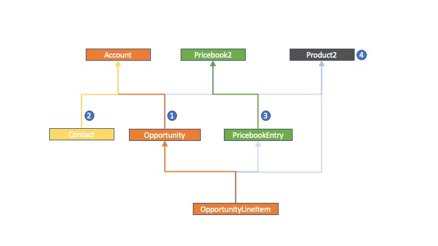
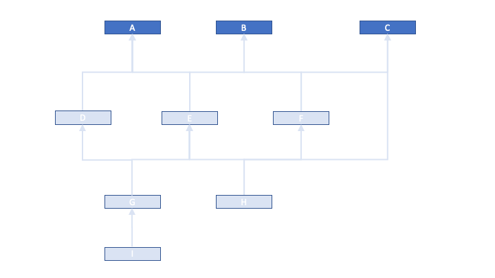
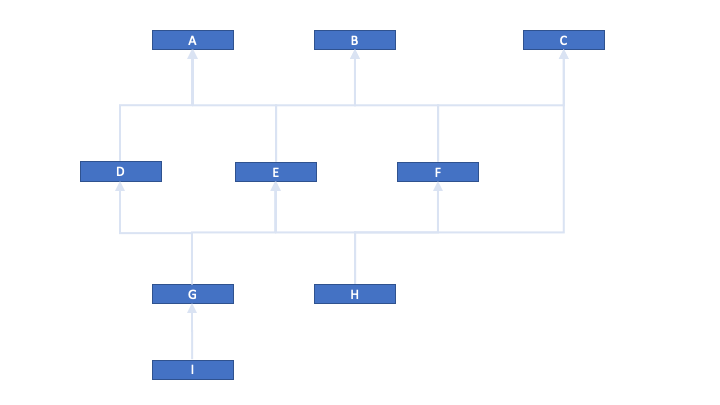
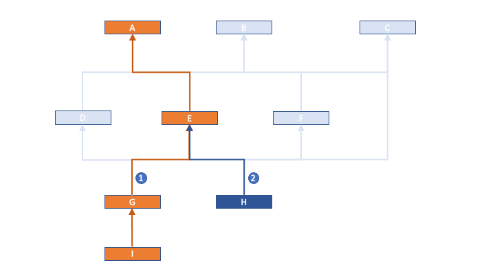
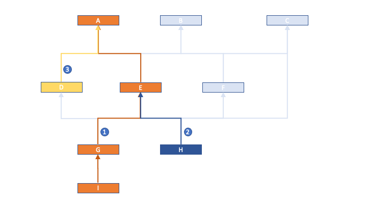
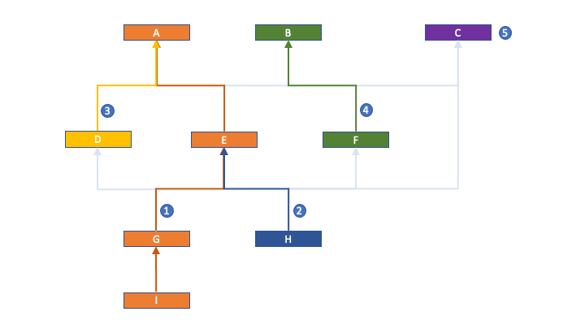
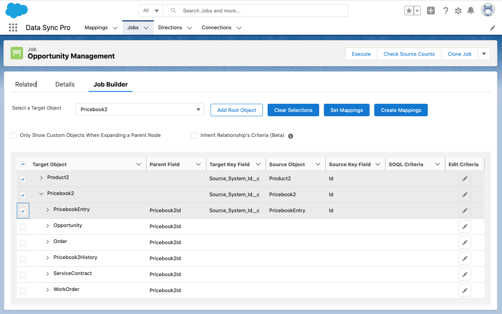
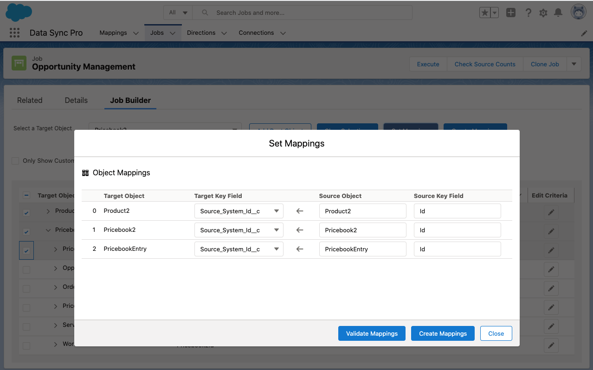
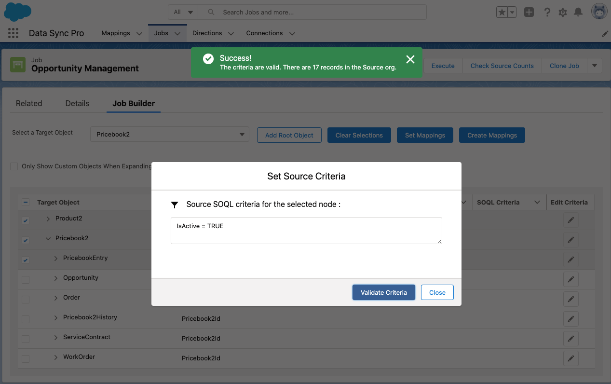
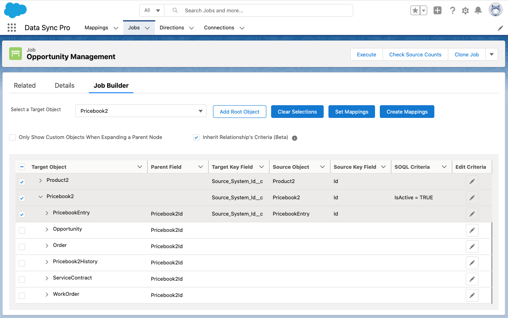

Job Builder
The Job Builder is a component that can help with creating a comprehensive list of related Mappings, while maintaining relationships, determining execution order and inherited criteria, within just a few minutes.
Note:
- This powerful component can improve work efficiency of creating relational Mappings by 90%, which is great for senior level users who have good knowledge in their data model and understand the referential denpendency between objects. But don't think you have to use it to build your object and field-level Mappings. DSP is still the easiest tool to create individual Mappings mannually.
- Job Builder generates the Mappings in the order of DFS(Deep-First-Search), in other words, top objects have lower Sequence Numbers than the bottom ones and left objects are prior to the right ones, for selected objects in the tree grid.
- Only prior objects in the order will be mapped in the reference fields of the subsequent mappings.
- With the above being said, you are free to modify the object-level settings and field-level mappings after the mappings are generated.
Quick Example
To see how easily this can be done, let us first take an example of migrating data for a list of objects related to the Opportunity Management. In a nutshell, two major steps are required to create the relevant mappings.
-
Identify the dependency Paths as described in the Identify
Paths section.
Data Model
-
Add the objects path by path to the tree grid, in the reversed order as the sequence
identified above, select the leaf nodes and fill out the required mapping details,
then hit the "Create Mappings" button, see the demo video below and the instructions Create Mappings.
Identify Paths
- Have your Entity Relationship Diagram(ERD) of your target org in front of you. For
example, the following diagram is a brief version of the Opportunity Management data model.
 Step 1
Step 1 - Determine the root objects needed in the migration. Root objects are those which do
not depend on
any parent data to be migrated prior to their migration. In this example, we have A,
B, C as the root objects.
Step 2
-
Identify all the to-be-deployed-to objects from the roots along the paths in the ERD network till
the leaf nodes. The leaf nodes are the lowest level objects which do not have descendents that are
dependent on them in the migration. If a
path is cyclic, try to break the cycle by removing asyclic path, for example X
-> Y -> Z -> X can be decycled to either
X -> Y -> Z or Y -> Z -> X. (To update the
relational fields that are removed from the cyle,
you can always create a Mapping separately with just the relevant relational fields and execute it
at the end.)
In our example, we assume all the objects in the diagram need to be migrated.
Step 3
- Find the longest path between any root object and any unmarked node in the network and
mark the path (path 1 in the below diagram).
 Step 4
Step 4 - Then find the next longest paths maximumly along the previously marked path until all
the
descendent nodes for the root object in the path are identified, mark the paths in the order
based on when the path is identified
(path 2 and 3 in the diagrams).
Step 5Step 6
- Keep doing this excise to find the next longest paths until all the root objects have
their paths identified (Path 3, 4 in the diagram).
Step 7
Create Mappings
- Go to the Job record where the new Mappings will be created and assiciated to it, click the Job Builder tab.
- Add the root object of the next available path identifed above to the tree grid.
Note:
The order of the paths to be added is reversed as they were identified in the paths idendification steps. In other words, the last identified path should be added first to the tree grid, and the first identified path should be the last.
- Expand the root object all the way down to the leaf node of the path.
- Check the leaf node which will result in all the objects in the path being selected.

- The Set Mappings modal pops up automatically. The order of the Mappings displayed
is the same order when the Mappings are created successfully.
Select the External Id Field for the target objects, map out the Source Objects and the Source Key
Fields. Click Validate Mappings to make sure the settings are valid.

- Repeat step 2 thru step 5 to add the next paths (in reversed order).
-
If there is a need to add criteria to a Mapping for retrieving the source data, click the edit icon
on the right of the node, fill out the criteria and
click Validate Criteria to check the validation, which if successful will show how many
records are there in the source object for the criteria defined.

Check "Inherit Relationship's Criteria (Beta)" if you wish to have the child Mappings inherits the criteria defined in their upper hierarchy along the same path, up to 5 levels. If there is a need for a Mapping to inherit criteria from multiple paths, make sure the same object is selected in those paths, in which scenario, the Job Builder will only create one Mapping for that object, but combines criteria inherited from multiple paths.
Note:
During the creation of the Mappings, the field and object level mappings are being validated, but the criteria is not. Make sure you validate it while defining it on the screen.
 - Click “Create Mappings”, the Job Builder generates the Mappings along with the default Field Mappings and the Criteria, then reloads the page after completion.
Note:
- The Job Builder is a convenient tool for creating a comprehensive list of Mappings with just a few clicks. For the convenience, the generated Mappings are defaulted with the most generally used settings. Make sure you validate and tailor them before data execution.
- Once the Mappings are created, the Job Builder will not restore them in the tree grid. New Mappings created via Job Builder will be brand new Mappings added to the related list of the Job.
- The sequence of the Mappings finnally generated is in DFS(Deep First Search) order. Only the preceeding Mappings will be mapped the relational fields in the later generaged Mappings if there is any.
- Default-created Field Mappings are either non-reference types of fields which have the same field type and developer name between the Source and Target objects, or the reference type of fields whose reference-to-object is mapped preceding the current object.
- You cannot select the same objects twice in the same path.
- The Job Builder only supports the Mappings creation where the Target Key Fields are External ID fields.